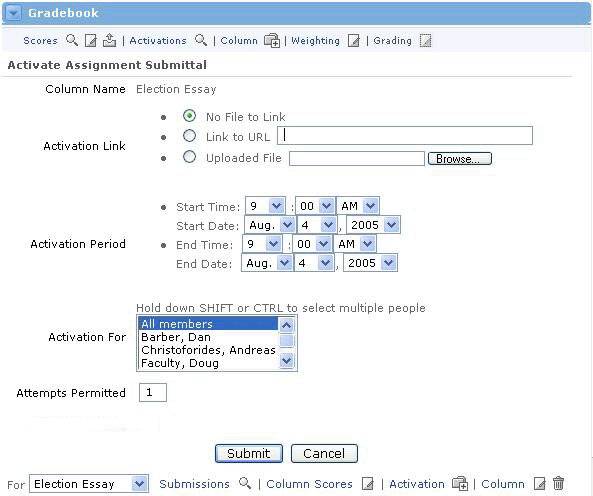

Activate a Gradebook Column
What is Activation?
Activation is simply the process by which assignments and assessments are made available to users in the offering. Once the sponsor (or instructor) activates an assignment, enrolled users can access and work on it. When users are finished with the assignment, they can submit it back to the sponsor for grading.This also applies to exams. The sponsor must first activate an exam before the enrolled users can take it and submit it for grading.

Activating a Gradebook Column
To activate any column in the Gradebook, follow these steps:
- In the Gradebook channel, locate the column you would like to activate.
- Click the radio button beneath the column OR select the column from the drop-down menu at the bottom of the Gradebook channel. By selecting the column in either of these methods, the alternate method will automatically be selected as well.
- Once your column is selected, click the Activate link at the bottom of the Gradebook channel.
- You should now see the Activate Assessment screen. If there is an assessment associated with this column from the course curriculum, it will be listed in the first row.
- The Column Name cannot be changed here, but you should take note of it to verify that you are activating the correct column.
- For the Activation Link row, you should select No File to Link if there is not a file or online resource to associated to the assignment, select Link to URL if this activation is already located online. If you want to upload a file for users to review or edit and submit for grading, select the Uploaded File button. Then use the Browse button to locate that file on your computer. These fields are left blank for Assessment activations.
- The Activation Period section allows you to set the dates and times when users can begin accessing this assignment or exam. You must also set the end dates and times (or deadline) when users will no longer be able to access the assignment or exam.
- The Activation For section allows you to activate this column for the all enrolled users, or only for a select few. If you only want to activate this column for two or three people, click on the first person's name, then hold the CTRL button down while selecting additional users.
- If you want users to be able to submit multiple attempts at this assignment or exam, enter the total number of attempts you want to allow in the Attempts Permitted field.
- Once you are satisfied with all of your selections, click the Submit button.
